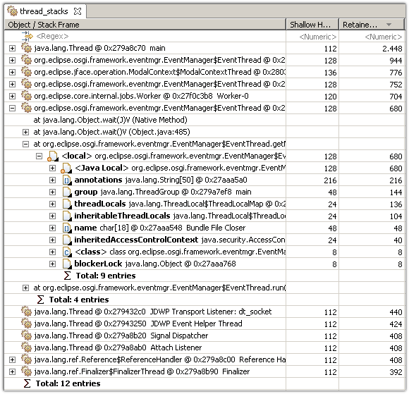
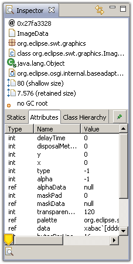
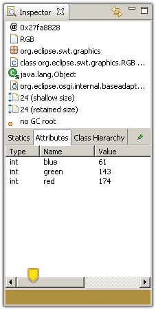
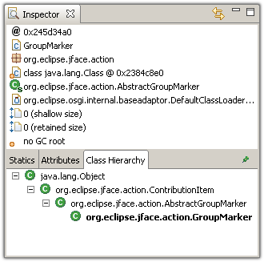
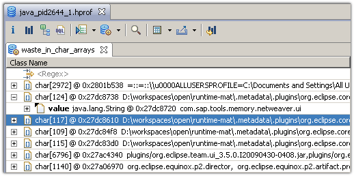

Here are descriptions of some of the more interesting or significant changes made to the Memory Analyzer for the 0.8 release.
Support IBM Heap Dumps
The IBM-family of Virtual Machines (VM) write heap dumps in various formats: PHD (portable heap dump), system dump, etc. IBM's Diagnostic Tool Framework for Java provides an API to read those heap dumps. After installing DTFJ, one can view and analyze IBM dumps with the same comfort as HPROF dumps.
Download IBM Diagnostic Tool Framework for Java Version 1.3 from IBM Developer Works.
Stack Frames
Heap dumps from the latest VMs include stack trace information, linking local GC roots to specific stack frames of specific threads. This information is now available via Java Basics / Thread Stacks query.
Supported heap dumps formats are HPROF (starting with Java 6 Update 14 and Java 7) as well as DTFJ-formatted dumps.
Histogram of Unreachable Objects
A heap dump can contain unreachable objects, e.g. objects which should be garbage collected but stay around for various reasons. Usually this is due to optimizations in the garbage collection algorithm. The Memory Analyzer removes these objects by default from the object graph.
Now one can use the Java Basics / Unreachable Objects Histogram to view the objects that have been removed. Alternatively, one can parse the heap dump providing the -keep_unreachable_objects flag. Using the flag, unreachable objects will be marked with the GC Root Type "unkown".

Find more information in the Memory Analyzer FAQ .
Inspector Enhancements
This great contribution from the Chris Grindstaff, recreates colors and images from the information in the heap dump and displays the information in the lower left corner of the inspector.
 Class Hierarchy in Inspector
The inspector displays now the full class hierarchy of any selected object. One can drill-down via context menus.
Waste in Char Arrays
This query finds strings that retain wasteful char arrays. Those strings are usually created by the substring function, which keeps the whole array but uses only part of the chars.
